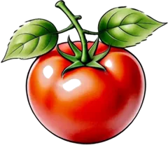
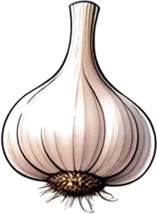
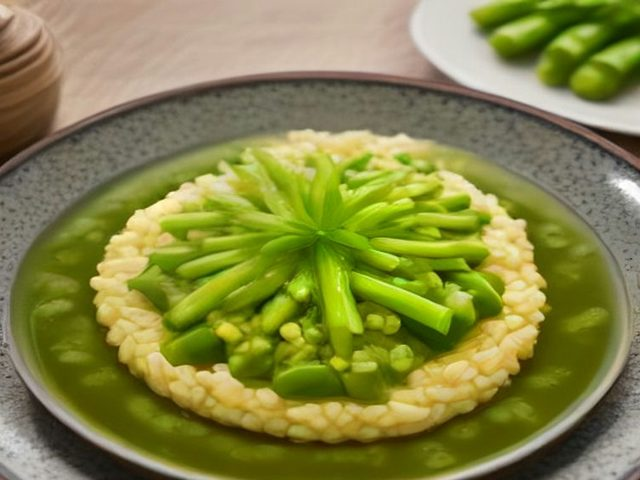
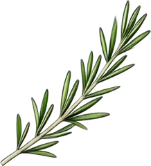
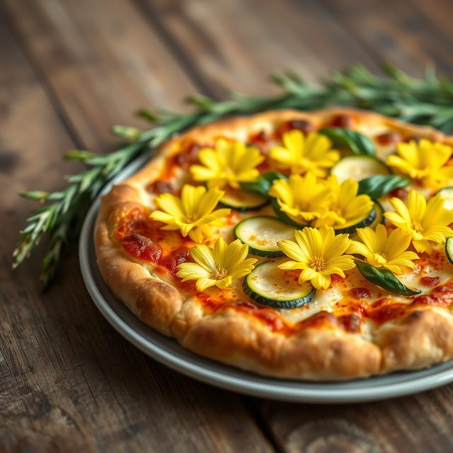

Il Ricettario
Che cosa cuciniamo oggi?
Dal Ricettario
Da provare questa settimana
Mani in pasta, telefono lontano
Un quaderno che legge ad alta voce

Il quaderno di famiglia
La pagina scritta a mano, con le macchie di sugo, diventa una ricetta ordinata. La fotografi e Gnamina la trascrive, oppure la detti come se la raccontassi a un'amica.
- Fotografa o detta la ricetta
- Controlla ingredienti e dosi
- Salvala: è tua, anche senza internet


Cucina con me
Gnamina legge ingredienti e passaggi, aspetta i tempi di cottura e passa da sola al passaggio seguente. Lo schermo resta acceso.
Passo 3 di 6. Scalda l'olio con l'aglio in camicia, poi aggiungi i pomodorini. Ci vogliono circa 10 minuti. «Non ho capito, ripeti» Passo 3. Scalda l'olio con l'aglio in camicia, poi aggiungi i pomodorini. «Quanto manca?» Mancano 6 minuti.Un viaggio in cucina
Dalle regioni, con amore

Dal video al piatto
Salva una ricetta da TikTok, Instagram o YouTube

Tocca «Condividi»
Sul video della ricetta, come per mandarlo a un amico.
Scegli Gnamina
Legge il post, il parlato del video e il sito del cuoco.

Controlla e salva
Titolo, ingredienti con le dosi e procedimento sono già compilati.
La sfida della settimana
La miglior carbonara
Partecipa con la tua ricetta originale e un breve video girato con l'app. La settimana dopo tutti la cucinano e la votano con le stelle: la più votata entra nel Ricettario con il tuo nome.